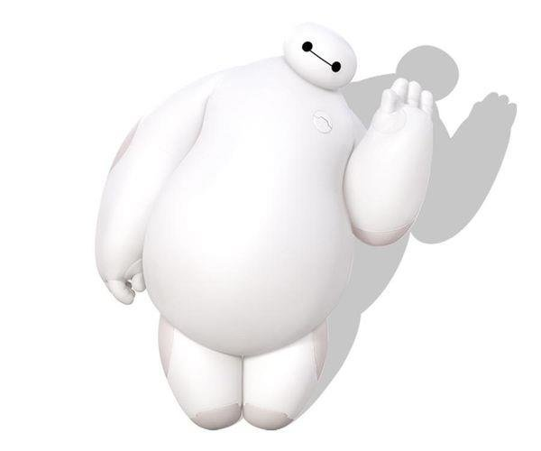

Big Hero 6: Baymax

Description
Baymax is an inflatable robot created to serve as a personal healthcare
companion from the movie
Big Hero 6
.
Following the death of his creater Tadashi Hamada, Baymax took on the role of
supporting and caring for his younger brother, Hiro Hamada. Throughout a series
of life-changing incidents, Hiro and Baymax joined a team of other "geniuses"
to save their hometown of San Fransokyo from an evil man trying to take over
the city.
Reasons Why I Admire Baymax
- From the first moment the character was introduced in the film, Baymax
caught my eyes. It was portrayed as a chubby, white, and squishy robot, similar
to that of a doll, except with many abilities such as monitoring others'
health. Its outer features gave me a feeling of comfort and pleasure.
- Other reasons I admire baymax is due to its bravery. Although it may be
nothing more of a money-making robot to the villains, from the perspective
of the creaters, it is bold in becoming a superhero to save the city,
given his apparent, physical weaknesses.
-
I also admire Baymax because it offers companion to its
creaters. One of the scenes that struck me was when its creater Tadashi
Hamada died, it not only was by his younger brother Hiro's side for a long
time, but also offered hug to Hiro. Who would've thought that even robots
can convey affection like such?